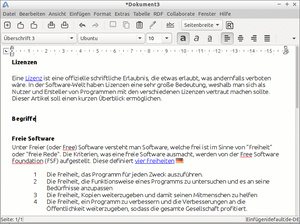

Abiword
Dieser Artikel wurde für die folgenden Ubuntu-Versionen getestet:
Ubuntu 16.04 Xenial Xerus
Ubuntu 14.04 Trusty Tahr
Zum Verständnis dieses Artikels sind folgende Seiten hilfreich:
Die Textverarbeitung AbiWord  integriert sich als wenig ressourcenhungrige GTK-Anwendung am besten in schlanke Systeme. Aus diesem Grund ist es bei Lubuntu die Standard-Textverarbeitung. Es lässt sich aber grundsätzlich mit allen Ubuntu-Varianten und deren Desktop-Umgebungen einsetzen.
integriert sich als wenig ressourcenhungrige GTK-Anwendung am besten in schlanke Systeme. Aus diesem Grund ist es bei Lubuntu die Standard-Textverarbeitung. Es lässt sich aber grundsätzlich mit allen Ubuntu-Varianten und deren Desktop-Umgebungen einsetzen.
Die gebotenen Funktionen entsprechen im Wesentlichen den Erwartungen an ein einfaches Textverarbeitungsprogramm, inklusive Formatvorlagen, Tabellen, Fußnoten und automatisch generiertes Inhaltsverzeichnis. Das genügt, um gelegentlich Texte zu verfassen oder Briefe zu schreiben. Die Bedienung von AbiWord ist intuitiv und weitgehend identisch mit anderen Textverarbeitungsprogrammen.
AbiWord verfügt darüber hinaus über interessante Funktionen. Darunter fallen zum Beispiel die Handhabung von AbiWord aus dem Terminal heraus sowie ein neues, noch experimentelles Plugin zum kollaborativen Arbeiten am selben Dokument (wie zum Beispiel mit dem Editor Gobby).
AbiWord und OpenDocument¶

Seit der Version 2.2.8 beinhaltet AbiWord einen Import-Filter für die OpenDocument-Formate, der mit 2.4.0 fertiggestellt wurde. Exportfilter sind seit der Version 2.4.2 vorhanden. Das OpenDocument-Format wurde als ISO-Standard  veröffentlicht. Die Notwendigkeit für OpenDocument wird darin gesehen, ein einheitliches, kompatibles Dokumentenformat einzuführen, dessen Zukunft nicht von einzelnen Anbietern abhängt und auf lange Zeit gesichert ist, um auch in Zukunft noch uneingeschränkt auf die Daten zugreifen zu können (siehe auch Problembehebung). Außerdem soll durch den offenen Standard mehr Wettbewerb ermöglicht werden.
veröffentlicht. Die Notwendigkeit für OpenDocument wird darin gesehen, ein einheitliches, kompatibles Dokumentenformat einzuführen, dessen Zukunft nicht von einzelnen Anbietern abhängt und auf lange Zeit gesichert ist, um auch in Zukunft noch uneingeschränkt auf die Daten zugreifen zu können (siehe auch Problembehebung). Außerdem soll durch den offenen Standard mehr Wettbewerb ermöglicht werden.
Hinweise, wie AbiWord mit den Datenformaten von Microsoft Word umgeht, findet man unter Datenmigration/Word.
AbiWord vs. OpenOffice.org/LibreOffice¶
Obwohl Ubuntu LibreOffice als Textverarbeitung mitliefert, benötigt nicht jede/r den Funktionsumfang des LibreOffice Writers. AbiWord ist klein, schnell und für viele Einsatzzwecke völlig ausreichend. Im Gegensatz zu Writer werden Open-Type-Ligaturen unterstützt. Sollte man GNOME benutzen, so werden AbiWord-Fenster beim Beenden einer Sitzung gespeichert und beim neuen Anmelden wiederhergestellt. Dieses Feature existiert bei anderen Desktops wie etwa KDE nicht.
Installation¶
Folgendes Paket muss installiert [1] werden, falls es nicht wie bei Xubuntu und Lubuntu bereits vorhanden ist:
abiword (universe)
 mit apturl
mit apturl
Paketliste zum Kopieren:
sudo apt-get install abiword
sudo aptitude install abiword
Aus dem Quelltext¶
Für Ubuntu-Versionen, bei denen Abiword 3.0 nicht in den offiziellen Paketquellen enthalten ist, kann man das Programm selbst aus dem Quelltext erstellen. Details finden sich im Unterartikel Abiword/Kompilieren.
Benutzung¶
Das Programm lässt sich aus dem Anwendungsmenü über den Eintrag:
"Büro -> AbiWord" oder "Büro -> Textverarbeitung"
bzw. alternativ mit dem Befehl [2]:
abiword
starten [3].
Vorlagen¶
Das Programm verfügt über ein eigenes Vorlagenformat: .awt. Um Vorlagen auch mit "Datei -> Neu aus Vorlage" nutzen zu können, müssen diese im richtigen Verzeichnis gespeichert werden. Die benutzereigenen Vorlagen liegen im Ordner ~/.config/abiword/templates/. Bei der Installation werden bereits einige Vorlagen installiert. Diese liegen global für alle Benutzer unter /usr/share/abiword-3.x/templates/ (x steht hier für die konkret installierte Version). Will man hier nicht benötigte Vorlagen löschen, so kann man diese nur mit Root-Rechten [4] entfernen.
Standardvorlage¶
Im Ordner /usr/share/abiword-3.x/templates/ befinden sich nach der Installation mehrere Dateien beginnend mit "normal.awt" und einer Lokalisationsangabe, die abhängig von den Länder- und Spracheinstellungen verwendet wird. Bei einem auf "German (Germany)" eingestellten System wird die normal.awt-de_DE verwendet und beim Starten von AbiWord geladen.
Befindet sich im Homeverzeichnis in ~/.config/abiword/templates ebenfalls eine normal.awt-*, so wird diese gestartet. So kann jeder Benutzer eine individuelle Standardvorlage einrichten.
Möchte man Formatierungen verändern, also das Layout oder die Schriftart und -attribute verändern, muss man die Vorlage in einem Editor bearbeiten [5]. Am einfachsten kopiert man die Vorlage aus dem globalen Vorlagenverzeichnis in das eigene (x durch die eigene Version ersetzen):
cp /usr/share/abiword-3.x/templates/normal.awt-de_DE ~/.config/abiword/templates/
Man kann selbstverständlich auch die Originalvorlage editieren und die Vorlage für alle Nutzer anpassen, dafür benötigt man dann allerdings Root-Rechte. In diesem Fall empfiehlt es sich, vor dem Eingriff eine Sicherheitskopie der Datei anzulegen. Die Vorlage wie auch die AbiWord-Dokumente besitzen eine XML-Struktur, in der man die Änderungen vornehmen kann.
Einstellungen ändern¶
Vorlagenunabhängige Einstellungen, wie etwa das standardmäßig ausgewählte Dateiformat, können nur global verändert werden. Alle verfügbaren Einstellungen und ihre aktuellen Werte kann man der Datei ~/.config/abiword/profile entnehmen. Nun öffnet man die Datei /usr/share/abiword-3.x/system.profile (x durch Versionsnummer ersetzen) in einem Editor mit Root-Rechten und fügt die Einstellungen innerhalb des <SystemDefaults />-Tags ein. Standardmäßig gibt es hier noch keine Einträge.
Am Beispiel des Dateiformates könnte dies so aussehen:
<SystemDefaults
DefaultSaveFormat=".rtf"
/>Beim nächsten Start von AbiWord ist statt des eigenen .abw-Formats im "Speichern unter ..."-Dialog das Rich Text Format (.rtf) standardmäßig angewählt.
Serienbriefe¶
Ein wenig umständlich ist die für eine Textverarbeitung unkonventionelle Serienbrieferstellung. Nach der Erstellung des Dokumentes wird der Druck durch das Kommandozeileninterface von AbiWord ausgelöst. Dies hat hingegen auch den unschlagbaren Vorteil, wiederkehrende Aufgaben zu automatisieren. Als Datenquelle dienen Komma- oder Tab-getrennte Werte in einer Textdatei (.csv/.tsv) oder eine XML-Datei. Die erstgenannten Dateitypen lassen sich zum Beispiel mit allen gängigen Tabellenkalkulationsprogrammen importieren und exportieren.
Ein Feld wird mit "Einfügen -> Feld für Serienbrief" erstellt. In diesem Dialog kann man dann entweder den neuen Feldnamen eingeben oder nach dem Auswählen einer Datenquelle mit "Datei öffnen" aus den verfügbaren Feldern auswählen.
Für den Druck wird AbiWord nun mit folgenden Optionen aufgerufen:
abiword -m <datenquelle> -p "<Drucker>" <dokument.abw>
Der Parameter -m übergibt die Datenquelle, als Drucker wird der Name des zu beauftragenden Druckers angegeben. Dies funktioniert natürlich auch mit dem Druck in eine Datei mittels PDF-Drucker.
Man kann auch für jeden Datensatz eine separate Datei ausgeben:
abiword -m <datenquelle> --to=pdf --to=ausgabe.pdf <dokument.abw>
Die Dateinamen werden mit "-0", "-1" usw. durchnummeriert. Weitere Ausgabeformate kann man der Hilfe (Option --help) oder der Manpage entnehmen.
Zeit-/Datumsfeld anpassen¶
Beim Einfügen von Datums-/Zeitangaben kann man unter "Einfügen -> Feld -> Datum und Uhrzeit" aus verschiedenen Formaten wählen. Findet man kein passendes Format, kann man unter der Option "Datum/Zeit anpassbar" mit dem darunter befindlichen Feld "Zusätzliche Parameter" eigene Formate definieren.
Das Feld akzeptiert dieselben Parameter wie die Unix strftime()-Funktion . Die Optionen kann man sich auch einfach mit
date --help
oder über die Manpage von strftime anzeigen lassen. Nützlich in diesem Zusammenhang ist auch For a Good Strftime .
Aus
%A, der %d. %B %Y
wird zum Beispiel der Text "Samstag, der 22. Dezember 2007".
Problembehebung¶
Importfilter¶
AbiWord ist eine Textverarbeitung mit vielen Import/Export-Filtern. AbiWord behauptet von sich, die meisten Dateiformate lesen zu können. In der Praxis bewahrheitet sich dies leider nicht immer. Beim Öffnen und Bearbeiten von OpenDocument-Dateien können z.B. ganze Tabellen oder Grafiken verschwinden oder es kommen unschöne Layoutveränderungen vor. Dann muss man mit einer intensiven Nachbearbeitung rechnen.
- Erstellt mit Inyoka
-
 2004 – 2017 ubuntuusers.de • Einige Rechte vorbehalten
2004 – 2017 ubuntuusers.de • Einige Rechte vorbehalten
Lizenz • Kontakt • Datenschutz • Impressum • Serverstatus -
Serverhousing gespendet von